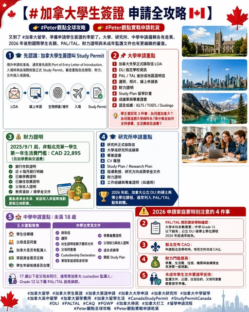

《看懂制度，選對世界》第一集
加拿大學生簽證申請全攻略
又到了 這份文件，決定學生能否合法在加拿大讀書。大學、研究所、中學申請邏輯各有差異，尤其 2026 年後，加拿大對國際學生名額、PAL/TAL、財力證明與中學未成年監護文件，都有更細緻的審查。

【 申請全攻略 】 又到了 這份文件，決定學生能否合法在加拿大讀書。大學、研究所、中學申請邏輯各有差異，尤其 2026 年後，加拿大對國際學生名額、PAL/TAL、財力證明與中學未成年監護文件，都有更細緻的審查。. 先認識：加拿大學生簽證叫 Study Permit 若學生從境外申請，核准後通常會收到 Port of Entry Letter of Introduction，入境時再由海關核發正式 Study Permit。
IRCC 官方說明，Study Permit 申請會依學生背景檢查錄取、財力、文件與入境資格。
. 大學申請重點：DLI、PAL/TAL、財力證明、Study Plan 申請加拿大大學本科，核心文件通常包括： 1 加拿大大學正式錄取信 LOA 2 DLI 指定學校資訊 3 PAL / TAL 省份或地區證明信 4 護照、照片、線上申請表 5 財力證明 6 Study Plan 留學計畫 7 成績單與畢業證書 8 語言成績，如 IELTS、TOEFL、Duolingo 加拿大目前要求大多數高等教育申請人提交 PAL 或 TAL，代表省份或地區核定學生名額。
IRCC 也列出 PAL/TAL 文件頁面，學生需依就讀省份與學校指示取得。學生要讓移民官理解三件事： 為何選加拿大 為何選這間大學與科系 家中資金如何支持學費、生活費與交通費 . 財力證明：加拿大簽證最重要的審查核心之一 是家長最常搜尋的關鍵字。IRCC 要求學生證明有足夠資金支付學費、生活費與返程交通。2025 年 9 月 1 日起，非魁北克地區單一學生第一年生活費門檻為 CAD 22,895，此金額還要加上學費與交通費。
常見財力文件包括： 銀行存款證明 近 4 個月銀行明細 已繳學費證明 已繳住宿費證明 父母收入證明 教育貸款證明 獎學金文件 財力文件的重點，並非帳戶裡有一筆錢而已，而是要讓資金來源、家庭收入與學生留學規劃彼此對得起來。. 研究所申請重點：碩士博士 2026 年規則更有利 申請加拿大研究所，文件比大學更重視學術連貫。
碩士與博士學生要準備： 1 研究所正式錄取信 2 大學或研究所成績單 3 畢業證書 4 CV 履歷 5 Study Plan 或 Research Plan 6 指導教授、研究方向或獎學金文件 7 財力證明 8 工作經驗與專業證照，若與科系相關 2026 年起，加拿大公立 DLI 的碩士與博士學位課程學生，通常列入 PAL/TAL 豁免群體。IRCC 公告也把公立 DLI 碩博士學生列為 2026 年 PAL/TAL 豁免對象。. 中學申請重點：未滿 18 歲， 比成績更關鍵 加拿大中學申請跟大學研究所差異很大。
對 來說，簽證審查重點除了學校錄取，也包含： 學生住哪裡 父母是否同意 加拿大是否有監護人 家庭資金是否足夠 學生年級銜接是否合理 IRCC 說明，17 歲以下未成年學生若父母或法定監護人未同行，需由加拿大公民或永久居民擔任 custodian 監護人；17 歲以上學生可視個案要求提供。
中學生常見文件包括： 1 中學或教育局錄取信 2 護照 3 出生證明或親子關係文件 4 父母同意書 5 Custodianship Declaration 監護文件 6 寄宿家庭或宿舍安排 7 學費繳費證明 8 父母財力與收入證明 9 過去成績單 簡版 Study Plan 另外，Grade 12 以下學生屬於 PAL/TAL 豁免族群。IRCC 2026 年公告列明，幼兒園至 Grade 12 學生屬 PAL/TAL 豁免對象。
2026 申請家庭要特別注意的 5 件事 2 PAL/TAL 規則要依學制確認 大學本科多數需要。中學 Grade 12 以下豁免。公立 DLI 碩博士學位課程 2026 年起通常豁免。3 魁北克有 CAQ 申請魁北克學校時，常見文件會改成 CAQ，申請前要依學校與省份指示整理。4 財力門檻提高 家長要把學費、生活費、住宿、機票與後續資金來源一起規劃。5 未成年學生文件要提早安排 監護文件、公證、住宿合約、父母同意書，都需要時間處理。
第四部 澳洲：學制、申請與留學新選擇
制度是地圖，選擇才是方向。